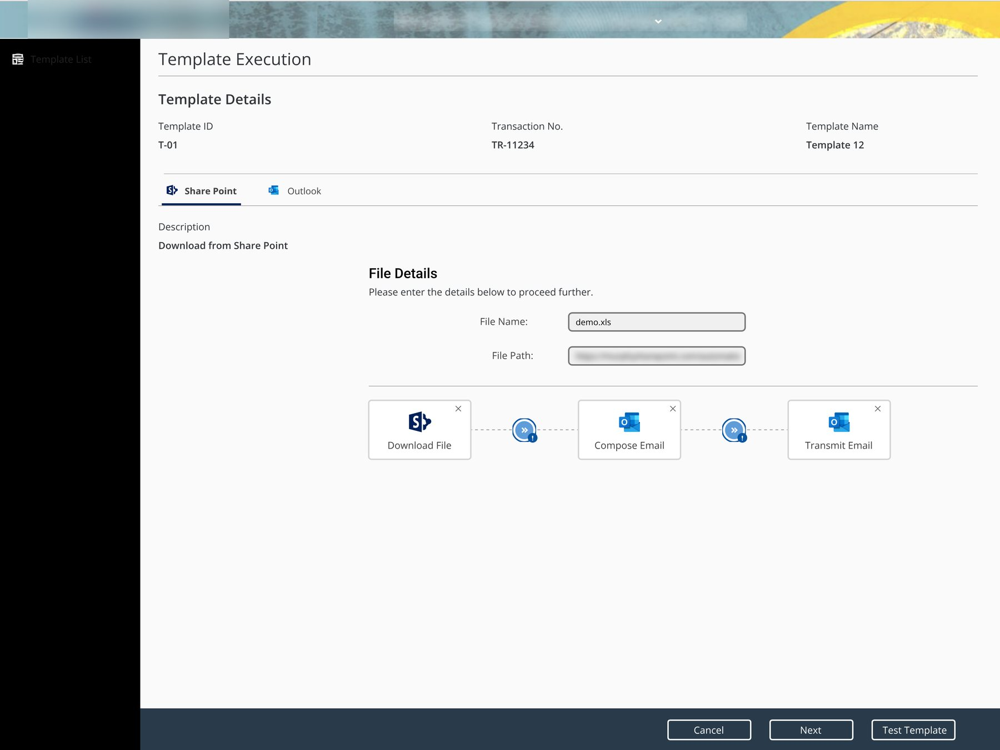
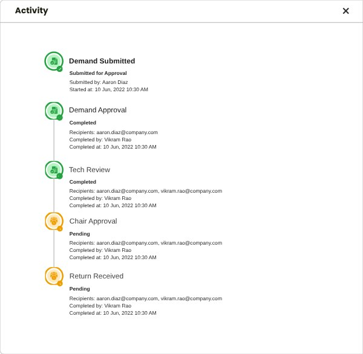

Murphy Oil / Incture Client · Oil and Gas · Automation and Mobile · 05/11
MURPHY OILBuild It Once, Test It, Then Run It.
- Role
- Lead designer. On the demand app, also the client's point of contact for design
- Context
- Murphy Oil, through Incture Technologies
- Apps
- An automation tool (desktop web) · A demand scoring app (mobile)
- Platform
- Desktop web and mobile
ONE CHAIN OF STEPS. FOUR SYSTEMS.
The Murphy Productivity and Automation Tool (MPAT) turns a chain of steps across systems into a template that can be run again and again. One template can run a transaction in SAP, download a file from SharePoint, move data from HANA to SQL and send the result by Outlook email.
Two kinds of people use it. Some build the templates. Others only run them. And a template that runs against SAP and sends emails has to work every time someone runs it.
The Problem
Let people build an automation once, and let others run it without knowing how it was built.
FOUR DECISIONS IN THE AUTOMATION TOOL.
Decision 01
Two Sides, Composer and Consumer
I split the tool into two sides. The composer is where a template is built and tested. The consumer side is where people find a template, add the details it needs (a file, a path, the email to send) and run it.
The people who build automations and the people who run them need different things, so they get different screens.
Decision 02
From a Table to a Canvas
The early work files, from the first days of March 2022, list a template's steps as a table: each step with an ID and a sequence number.
By the 4 March version, the steps had become a palette of systems (SAP, SharePoint, SQL and Outlook) that the builder drags into the template. Field mapping connects the output of one step to the input of the next. By 24 March, the composer was a canvas, with the whole chain in view.
A table of IDs hides the order of the steps and what passes between them. On the canvas, the builder sees both.
Screen: The composer, building a template on the canvas

A palette of systems
SharePoint, Outlook, MS SQL and SAP actions to drag into the template.
The chain in view
Each step and its order, left to right, instead of IDs in a table.
Field mapping
What passes from one step to the next, set right under the chain.
Decision 03
Test Before Release
A template moves through clear statuses: New, then Under Test, then Released. It's tested before it's released for others to run.
The test run shows whether each run succeeded, failed or is still pending, and when it fails, the error message shows on the same screen. Smaller states are covered too: a template name that already exists is caught when it's saved, and an empty canvas tells the builder what to do first.
Screen: Templates, with each one's status

Counts by status
All, New, Under Test and Released, before the list.
Status on every row
A template under test is never mistaken for a released one.
Find by who and when
Filters for created and updated, by date and by person.
Screen: Running a template step by step before release

One tab per step
SharePoint, then Outlook, in the order the template runs.
Only what is needed
The file name and path for this step, nothing about how it was built.
Test before release
Test Template sits next to Next, so a template is tried before it goes out.
Decision 04
Show What Ran
On the consumer side, every run gets a transaction number. People see their past transactions by day and by week, who ran each one and when, and can start a new one from there.
When something goes wrong a week later, there's a record to go back to.
SCORE WHAT MATTERS. SHOW WHO DECIDED.
Alongside MPAT, I designed a mobile app for Murphy's business demands. On this app, I was the client's point of contact for design.
Each demand is scored before it moves on. The requester picks and scores the top three KPIs for the demand from Murphy's own list, sets the weight and the impact of each, and adds the cost, the business sponsor and the department, before the next level of assessment.
Screen: L2 assessment

The demand stays in view while its KPIs are scored.
Screen: Scores on the KPIs

Each picked KPI shows the score it was given.
Every demand carries an activity log and a process flow: each approval step, who completed it, when, and their comments. So anyone looking at a demand sees where it is and who it's waiting on.
I explored three layouts for the task list before settling on one, and designed for the cases that break a mobile list, such as a demand name too long for one line.
Screen: The approval trail

Every step, its status and who completed it.
WHAT WAS DESIGNED.
2
Sides of the automation tool: composer and consumer.
4
Systems one template can span: SAP, SharePoint, SQL and Outlook.
3
Statuses a template passes through before others can run it.
3
Task-list layouts explored for the demand app.
This page reports scope, not measured results.